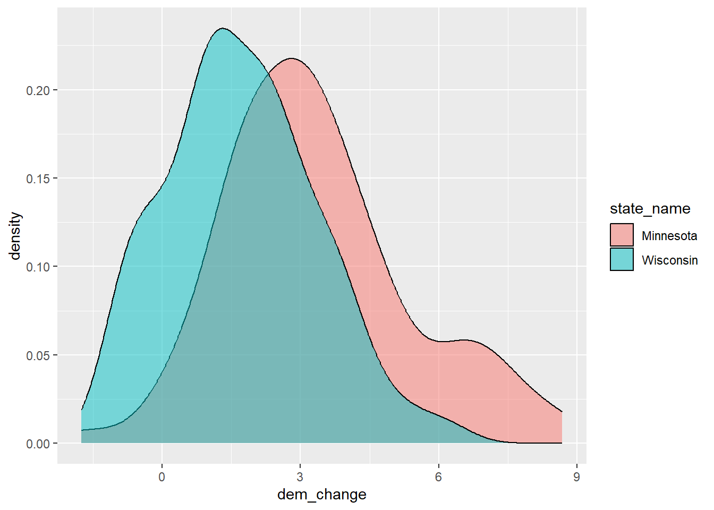
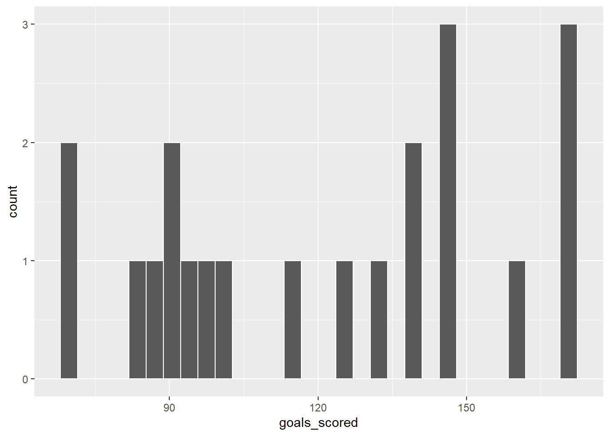
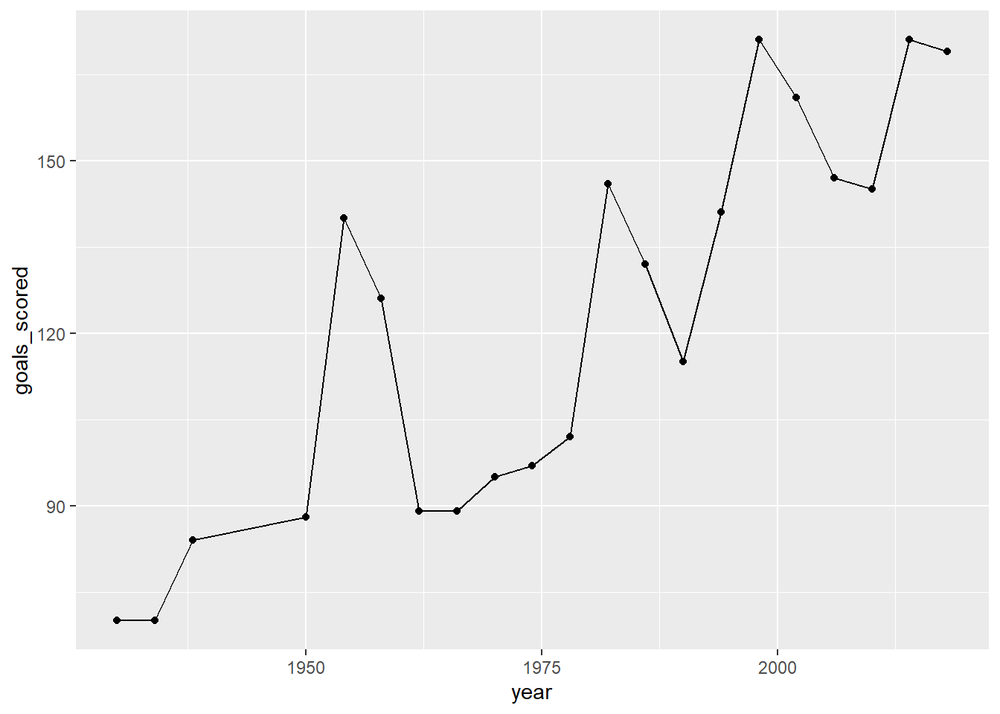

Warning: package 'tidyverse' was built under R version 4.4.2
── Attaching core tidyverse packages ──────────────────────── tidyverse 2.0.0 ──
✔ dplyr 1.1.4 ✔ readr 2.1.5
✔ forcats 1.0.0 ✔ stringr 1.5.1
✔ ggplot2 3.5.1 ✔ tibble 3.2.1
✔ lubridate 1.9.3 ✔ tidyr 1.3.1
✔ purrr 1.0.2
── Conflicts ────────────────────────────────────────── tidyverse_conflicts() ──
✖ dplyr::filter() masks stats::filter()
✖ dplyr::lag() masks stats::lag()
ℹ Use the conflicted package (<http://conflicted.r-lib.org/>) to force all conflicts to become errors
elections <-read.csv("https://mac-stat.github.io/data/election_2020_county.csv")# Define elections_smallelections_small <- elections |>select(state_name, county_name, total_votes_20, repub_pct_20, dem_pct_20, total_votes_16, dem_pct_16)# Check out the first 6 rows to confirm your code did what you think it did!head(elections_small)
# Keep only data on counties in Hawaiielections_small |>filter(state_name =="Hawaii")
state_name county_name total_votes_20 repub_pct_20 dem_pct_20
1 Hawaii Hawaii County 87814 30.63 66.88
2 Hawaii Honolulu County 382114 35.66 62.51
3 Hawaii Kauai County 33497 34.58 63.36
4 Hawaii Maui County 71044 31.14 66.59
total_votes_16 dem_pct_16
1 64865 63.61
2 285683 61.48
3 26335 62.49
4 51942 64.45
# Keep counties in Hawaii AND Delawareelections_small |>filter(state_name %in%c("Hawaii", "Delaware"))
state_name county_name total_votes_20 repub_pct_20 dem_pct_20
1 Delaware Kent County 87025 47.12 51.19
2 Delaware New Castle County 287633 30.72 67.81
3 Delaware Sussex County 129352 55.07 43.82
4 Hawaii Hawaii County 87814 30.63 66.88
5 Hawaii Honolulu County 382114 35.66 62.51
6 Hawaii Kauai County 33497 34.58 63.36
7 Hawaii Maui County 71044 31.14 66.59
total_votes_16 dem_pct_16
1 74253 44.91
2 261468 62.30
3 105814 37.17
4 64865 63.61
5 285683 61.48
6 26335 62.49
7 51942 64.45
# Keep only data on counties where the Republican got MORE THAN 93.97% of the vote in 2020elections_small |>filter(repub_pct_20 >93.97)
state_name county_name total_votes_20 repub_pct_20 dem_pct_20
1 Texas Borden County 416 95.43 3.85
2 Texas King County 159 94.97 5.03
3 Texas Roberts County 550 96.18 3.09
total_votes_16 dem_pct_16
1 365 8.49
2 159 3.14
3 550 3.64
# Keep only data on counties where the Republican got AT LEAST 93.97% of the vote in 2020# This should have 1 more row than your answer aboveelections_small |>filter(repub_pct_20 >=93.97)
state_name county_name total_votes_20 repub_pct_20 dem_pct_20
1 Montana Garfield County 813 93.97 5.04
2 Texas Borden County 416 95.43 3.85
3 Texas King County 159 94.97 5.03
4 Texas Roberts County 550 96.18 3.09
total_votes_16 dem_pct_16
1 715 4.76
2 365 8.49
3 159 3.14
4 550 3.64
# Keep only data on counties in Texas where the Democrat got more than 65% of the vote in 2020# Do this 2 ways.# Method 1: 2 filters with 1 condition eachelections_small |>filter(state_name =="Texas") |>filter(dem_pct_20 >65)
state_name county_name total_votes_20 repub_pct_20 dem_pct_20
1 Texas El Paso County 267215 31.56 66.66
2 Texas Presidio County 2217 32.52 65.99
3 Texas Travis County 610349 26.43 71.41
4 Texas Zavala County 4379 34.03 65.40
total_votes_16 dem_pct_16
1 210458 69.14
2 2203 66.18
3 462511 66.26
4 3390 77.67
state_name county_name total_votes_20 repub_pct_20 dem_pct_20
1 Texas El Paso County 267215 31.56 66.66
2 Texas Presidio County 2217 32.52 65.99
3 Texas Travis County 610349 26.43 71.41
4 Texas Zavala County 4379 34.03 65.40
total_votes_16 dem_pct_16
1 210458 69.14
2 2203 66.18
3 462511 66.26
4 3390 77.67
9.3 Exercise 3
# Arrange the counties in elections_small from lowest to highest percentage of 2020 Republican support# Print out just the first 6 rowselections_small |>arrange(repub_pct_20) |>head()
state_name county_name total_votes_20 repub_pct_20
1 District of Columbia District of Columbia 344356 5.40
2 Maryland Prince George's County 424855 8.73
3 Maryland Baltimore city 237461 10.69
4 Virginia Petersburg city 14118 11.22
5 New York New York County 694904 12.26
6 California San Francisco County 443458 12.72
dem_pct_20 total_votes_16 dem_pct_16
1 92.15 280272 92.85
2 89.26 351091 89.33
3 87.28 208980 85.44
4 87.75 13717 87.52
5 86.78 591368 87.17
6 85.27 365295 85.53
# Arrange the counties in elections_small from highest to lowest percentage of 2020 Republican support# Print out just the first 6 rowselections_small |>arrange(desc(repub_pct_20)) |>head()
state_name county_name total_votes_20 repub_pct_20 dem_pct_20
1 Texas Roberts County 550 96.18 3.09
2 Texas Borden County 416 95.43 3.85
3 Texas King County 159 94.97 5.03
4 Montana Garfield County 813 93.97 5.04
5 Texas Glasscock County 653 93.57 5.97
6 Nebraska Grant County 402 93.28 4.98
total_votes_16 dem_pct_16
1 550 3.64
2 365 8.49
3 159 3.14
4 715 4.76
5 602 5.65
6 394 5.08
9.4 Exercise 4
# Define diff_20, the difference btwn the Repub and Dem percent in 2020elections_small |>mutate(diff_20 = repub_pct_20 - dem_pct_20) |>head()
# Define repub_votes_20, the number (not percent) of Repub votes in 2020elections_small |>mutate(repub_votes_20 =round(total_votes_20 * repub_pct_20/100)) |>head()
county_name repub_pct_20 dem_pct_20 repub_win_20
1 Kent County 47.12 51.19 FALSE
2 New Castle County 30.72 67.81 FALSE
3 Sussex County 55.07 43.82 TRUE
# Now try it. Change the order of mutate and select below. elections_small |>filter(state_name =="Delaware") |>mutate(repub_win_20 = repub_pct_20 > dem_pct_20) |>select(county_name, repub_pct_20, dem_pct_20, repub_win_20)
county_name repub_pct_20 dem_pct_20 repub_win_20
1 Kent County 47.12 51.19 FALSE
2 New Castle County 30.72 67.81 FALSE
3 Sussex County 55.07 43.82 TRUE
9.6 Exercise 6
# Remember to try this 1 line at a timeelections_small |>filter(state_name =="Minnesota") |>select(county_name, dem_pct_20) |>arrange(desc(dem_pct_20))
county_name dem_pct_20
1 Ramsey County 71.50
2 Hennepin County 70.46
3 Cook County 65.58
4 St. Louis County 56.64
5 Dakota County 55.73
6 Olmsted County 54.16
7 Washington County 53.46
8 Blue Earth County 50.84
9 Clay County 50.74
10 Lake County 50.64
11 Nicollet County 50.31
12 Carlton County 49.58
13 Winona County 49.07
14 Rice County 48.76
15 Mahnomen County 48.26
16 Anoka County 47.79
17 Beltrami County 47.24
18 Carver County 46.37
19 Mower County 46.00
20 Scott County 45.52
21 Houston County 42.42
22 Goodhue County 41.23
23 Freeborn County 40.96
24 Norman County 40.80
25 Itasca County 40.61
26 Koochiching County 38.41
27 Watonwan County 38.20
28 Kittson County 38.12
29 Stevens County 37.80
30 Stearns County 37.58
31 Fillmore County 37.48
32 Steele County 37.47
33 Kandiyohi County 36.12
34 Aitkin County 35.98
35 Lyon County 35.94
36 Lac qui Parle County 35.79
37 Wabasha County 35.78
38 Grant County 35.58
39 Traverse County 35.46
40 Big Stone County 35.41
41 Pennington County 35.29
42 Pope County 35.27
43 Polk County 34.88
44 Cass County 34.68
45 Wright County 34.49
46 Hubbard County 34.42
47 Swift County 34.35
48 Crow Wing County 34.17
49 Chisago County 34.15
50 Becker County 33.96
51 Pine County 33.87
52 Le Sueur County 33.73
53 Chippewa County 33.67
54 Nobles County 33.65
55 Waseca County 33.65
56 Dodge County 33.47
57 Otter Tail County 32.85
58 Benton County 32.70
59 Douglas County 32.56
60 Brown County 32.48
61 Sherburne County 32.48
62 Faribault County 31.98
63 Red Lake County 31.47
64 Renville County 30.71
65 McLeod County 30.64
66 Yellow Medicine County 30.54
67 Lincoln County 30.08
68 Cottonwood County 30.03
69 Kanabec County 30.02
70 Martin County 30.02
71 Jackson County 29.99
72 Mille Lacs County 29.98
73 Wilkin County 29.91
74 Rock County 29.69
75 Murray County 29.60
76 Isanti County 29.45
77 Sibley County 28.60
78 Meeker County 28.58
79 Redwood County 28.43
80 Lake of the Woods County 27.87
81 Clearwater County 26.76
82 Pipestone County 26.44
83 Wadena County 26.35
84 Roseau County 25.98
85 Marshall County 25.33
86 Todd County 24.79
87 Morrison County 22.33
# Remember to try this 1 line at a time before storing!mn_wi <- elections_small |>filter(state_name %in%c("Minnesota", "Wisconsin")) |>select(state_name, county_name, dem_pct_20, dem_pct_16) |>mutate(dem_change = dem_pct_20 - dem_pct_16) |>arrange(dem_change)# Check it outhead(mn_wi)
state_name county_name dem_pct_20 dem_pct_16 dem_change
1 Minnesota Stevens County 37.80 39.55 -1.75
2 Wisconsin Forest County 34.06 35.12 -1.06
3 Wisconsin Kewaunee County 32.87 33.73 -0.86
4 Wisconsin Clark County 30.37 31.19 -0.82
5 Wisconsin Adams County 36.63 37.40 -0.77
6 Wisconsin Trempealeau County 40.86 41.57 -0.71
ggplot(mn_wi, aes(x = dem_change, fill = state_name)) +geom_density(alpha =0.5)

ggplot(mn_wi, aes(y = dem_change, x = state_name)) +geom_boxplot()
##Exercise 7
# Calculate the median Repub vote percentage in 2020 across all countieselections_small |>summarize(median(repub_pct_20))
median(repub_pct_20)
1 68.29
# Calculate the median Repub vote percentage in 2020 across all counties# AND name it "median_repub"elections_small |>summarize(median_repub =median(repub_pct_20))
median_repub
1 68.29
# Calculate the median Repub vote percentage in 2020 across all counties# AND the total number of votes across all counties# AND name the resultselections_small |>summarize(median_repub =median(repub_pct_20), total_votes =sum(total_votes_20))
median_repub total_votes
1 68.29 157949293
9.7 Exercise 8
# Calculate the median 2020 Repub percent and total votes BY STATEelections_small |>group_by(state_name) |>summarize(median_repub =median(repub_pct_20), total_votes =sum(total_votes_20))
# A tibble: 50 × 3
state_name median_repub total_votes
<chr> <dbl> <int>
1 Alabama 70.6 2323304
2 Arizona 57.9 3387326
3 Arkansas 72.1 1219069
4 California 44.8 17495906
5 Colorado 56.2 3256953
6 Connecticut 41.0 1824280
7 Delaware 47.1 504010
8 District of Columbia 5.4 344356
9 Florida 64.6 11067456
10 Georgia 68 4997716
# ℹ 40 more rows
9.8 Exercise 9
# Sort the states from the most to least total votes in 2020elections_small |>group_by(state_name) |>summarize(total =sum(total_votes_20)) |>arrange(desc(total))
# A tibble: 50 × 2
state_name total
<chr> <int>
1 California 17495906
2 Texas 11317911
3 Florida 11067456
4 New York 8616205
5 Pennsylvania 6925255
6 Illinois 6038850
7 Ohio 5922202
8 Michigan 5539302
9 North Carolina 5524801
10 Georgia 4997716
# ℹ 40 more rows
# In 2020, what were the total number of votes for the Democratic candidate and the total number of votes for the Republican candidate in each *state*?elections_small |>mutate(dem_votes_20 =round(total_votes_20 * dem_pct_20 /100), repub_votes_20 =round(total_votes_20 * repub_pct_20 /100)) |>group_by(state_name) |>summarize(dem_total =sum(dem_votes_20),repub_total =sum(repub_votes_20))
# A tibble: 50 × 3
state_name dem_total repub_total
<chr> <dbl> <dbl>
1 Alabama 849664 1441155
2 Arizona 1672127 1661671
3 Arkansas 423919 760641
4 California 11109642 6006031
5 Colorado 1804393 1364627
6 Connecticut 1080677 715315
7 Delaware 296274 200601
8 District of Columbia 317324 18595
9 Florida 5297131 5668600
10 Georgia 2473661 2461869
# ℹ 40 more rows
# What states did the Democratic candidate win in 2020?elections_small |>mutate(dem_votes_20 =round(total_votes_20 * dem_pct_20 /100), repub_votes_20 =round(total_votes_20 * repub_pct_20 /100)) |>group_by(state_name) |>summarize(dem_total =sum(dem_votes_20),repub_total =sum(repub_votes_20)) |>filter(dem_total > repub_total)
# A tibble: 26 × 3
state_name dem_total repub_total
<chr> <dbl> <dbl>
1 Arizona 1672127 1661671
2 California 11109642 6006031
3 Colorado 1804393 1364627
4 Connecticut 1080677 715315
5 Delaware 296274 200601
6 District of Columbia 317324 18595
7 Georgia 2473661 2461869
8 Hawaii 366121 196865
9 Illinois 3471916 2446931
10 Maine 430466 359897
# ℹ 16 more rows
# In what years did Brazil win the World Cup?world_cup |>filter(winner =="Brazil")
year host winner second third fourth
1 1958 Sweden Brazil Sweden France West Germany
2 1962 Chile Brazil Czechoslovakia Chile Yugoslavia
3 1970 Mexico Brazil Italy West Germany Uruguay
4 1994 USA Brazil Italy Sweden Bulgaria
5 2002 Japan, South Korea Brazil Germany Turkey South Korea
goals_scored teams games attendance
1 126 16 35 868000
2 89 16 32 776000
3 95 16 32 1673975
4 141 24 52 3568567
5 161 32 64 2724604
# What were the 6 World Cups with the highest attendance?world_cup |>arrange(desc(attendance)) |>head()
year host winner second third fourth
1 1994 USA Brazil Italy Sweden Bulgaria
2 2014 Brazil Germany Argentina Netherlands Brazil
3 2006 Germany Italy France Germany Portugal
4 2018 Russia France Croatia Belgium England
5 1998 France France Brazil Croatia Netherlands
6 2002 Japan, South Korea Brazil Germany Turkey South Korea
goals_scored teams games attendance
1 141 24 52 3568567
2 171 32 64 3441450
3 147 32 64 3367000
4 169 32 64 3031768
5 171 32 64 2859234
6 161 32 64 2724604
# Construct a univariate plot of goals_scored (no wrangling necessary)# This provides a visual summary of how the number of goals_scored varies from World Cup to World Cupggplot(world_cup, aes(x = goals_scored)) +geom_histogram(color ="white")
`stat_bin()` using `bins = 30`. Pick better value with `binwidth`.

# Let's follow up the plot with some more precise numerical summaries# Calculate the min, median, and max number of goals_scored across all World Cups# NOTE: Visually compare these numerical summaries to what you observed in the plotworld_cup |>summarize(min(goals_scored), median(goals_scored), max(goals_scored))
# Construct a bivariate plot of how the number of goals_scored in the World Cup has changed over the years# No wrangling necessaryggplot(world_cup, aes(x = year, y = goals_scored)) +geom_point() +geom_line()

# Our above summaries might be a bit misleading.# The number of games played at the World Cup varies.# Construct a bivariate plot of how the typical number of goals per game has changed over the yearsper_game_data <- world_cup |>mutate(goals_per_game = goals_scored / games)ggplot(per_game_data, aes(x = year, y = goals_per_game)) +geom_point() +geom_line()
Source Code
---title: "ica-wrangling"format: html---## Exercise 1```{r}# Load tidyverse & datalibrary(tidyverse)elections <-read.csv("https://mac-stat.github.io/data/election_2020_county.csv")# Define elections_smallelections_small <- elections |>select(state_name, county_name, total_votes_20, repub_pct_20, dem_pct_20, total_votes_16, dem_pct_16)# Check out the first 6 rows to confirm your code did what you think it did!head(elections_small)```## Exercise 2```{r}# Keep only data on counties in Hawaiielections_small |>filter(state_name =="Hawaii")``````{r}# Keep counties in Hawaii AND Delawareelections_small |>filter(state_name %in%c("Hawaii", "Delaware"))``````{r}# Keep only data on counties where the Republican got MORE THAN 93.97% of the vote in 2020elections_small |>filter(repub_pct_20 >93.97)``````{r}# Keep only data on counties where the Republican got AT LEAST 93.97% of the vote in 2020# This should have 1 more row than your answer aboveelections_small |>filter(repub_pct_20 >=93.97)``````{r}# Keep only data on counties in Texas where the Democrat got more than 65% of the vote in 2020# Do this 2 ways.# Method 1: 2 filters with 1 condition eachelections_small |>filter(state_name =="Texas") |>filter(dem_pct_20 >65)``````{r}# Method 2: 1 filter with 2 conditionselections_small |>filter(state_name =="Texas", dem_pct_20 >65)```## Exercise 3```{r}# Arrange the counties in elections_small from lowest to highest percentage of 2020 Republican support# Print out just the first 6 rowselections_small |>arrange(repub_pct_20) |>head()``````{r}# Arrange the counties in elections_small from highest to lowest percentage of 2020 Republican support# Print out just the first 6 rowselections_small |>arrange(desc(repub_pct_20)) |>head()```## Exercise 4```{r}# Define diff_20, the difference btwn the Repub and Dem percent in 2020elections_small |>mutate(diff_20 = repub_pct_20 - dem_pct_20) |>head()``````{r}# Define repub_votes_20, the number (not percent) of Repub votes in 2020elections_small |>mutate(repub_votes_20 =round(total_votes_20 * repub_pct_20/100)) |>head()``````{r}# Define repub_win_20, whether the Repub won in 2020 (TRUE or FALSE!)elections_small |>mutate(repub_win_20 = repub_pct_20 > dem_pct_20) |>head()```## Exercise 5```{r} elections_small |>filter(state_name =="Wisconsin", repub_pct_20 < dem_pct_20) |>arrange(desc(total_votes_20)) |>head()``````{r} elections_small |>filter(state_name =="Wisconsin", repub_pct_20 < dem_pct_20) |>arrange(desc(total_votes_20)) |>head()``````{r} elections_small |>filter(state_name =="Delaware") |>mutate(repub_win_20 = repub_pct_20 > dem_pct_20) |>select(county_name, repub_pct_20, dem_pct_20, repub_win_20)``````{r}# Now try it. Change the order of mutate and select below. elections_small |>filter(state_name =="Delaware") |>mutate(repub_win_20 = repub_pct_20 > dem_pct_20) |>select(county_name, repub_pct_20, dem_pct_20, repub_win_20)```## Exercise 6```{r}# Remember to try this 1 line at a timeelections_small |>filter(state_name =="Minnesota") |>select(county_name, dem_pct_20) |>arrange(desc(dem_pct_20))``````{r}# Remember to try this 1 line at a time before storing!mn_wi <- elections_small |>filter(state_name %in%c("Minnesota", "Wisconsin")) |>select(state_name, county_name, dem_pct_20, dem_pct_16) |>mutate(dem_change = dem_pct_20 - dem_pct_16) |>arrange(dem_change)# Check it outhead(mn_wi)``````{r}ggplot(mn_wi, aes(x = dem_change, fill = state_name)) +geom_density(alpha =0.5)``````{r}ggplot(mn_wi, aes(y = dem_change, x = state_name)) +geom_boxplot()```##Exercise 7```{r}# Calculate the median Repub vote percentage in 2020 across all countieselections_small |>summarize(median(repub_pct_20))``````{r}# Calculate the median Repub vote percentage in 2020 across all counties# AND name it "median_repub"elections_small |>summarize(median_repub =median(repub_pct_20))``````{r}# Calculate the median Repub vote percentage in 2020 across all counties# AND the total number of votes across all counties# AND name the resultselections_small |>summarize(median_repub =median(repub_pct_20), total_votes =sum(total_votes_20))```## Exercise 8```{r}# Calculate the median 2020 Repub percent and total votes BY STATEelections_small |>group_by(state_name) |>summarize(median_repub =median(repub_pct_20), total_votes =sum(total_votes_20)) ```## Exercise 9```{r}# Sort the states from the most to least total votes in 2020elections_small |>group_by(state_name) |>summarize(total =sum(total_votes_20)) |>arrange(desc(total))``````{r}# In 2020, what were the total number of votes for the Democratic candidate and the total number of votes for the Republican candidate in each *state*?elections_small |>mutate(dem_votes_20 =round(total_votes_20 * dem_pct_20 /100), repub_votes_20 =round(total_votes_20 * repub_pct_20 /100)) |>group_by(state_name) |>summarize(dem_total =sum(dem_votes_20),repub_total =sum(repub_votes_20))``````{r}# What states did the Democratic candidate win in 2020?elections_small |>mutate(dem_votes_20 =round(total_votes_20 * dem_pct_20 /100), repub_votes_20 =round(total_votes_20 * repub_pct_20 /100)) |>group_by(state_name) |>summarize(dem_total =sum(dem_votes_20),repub_total =sum(repub_votes_20)) |>filter(dem_total > repub_total)```## Exercise 10```{r}world_cup <-read.csv("https://raw.githubusercontent.com/rfordatascience/tidytuesday/master/data/2022/2022-11-29/worldcups.csv")``````{r}# In what years did Brazil win the World Cup?world_cup |>filter(winner =="Brazil")``````{r}# What were the 6 World Cups with the highest attendance?world_cup |>arrange(desc(attendance)) |>head()``````{r}# Construct a univariate plot of goals_scored (no wrangling necessary)# This provides a visual summary of how the number of goals_scored varies from World Cup to World Cupggplot(world_cup, aes(x = goals_scored)) +geom_histogram(color ="white")``````{r}# Let's follow up the plot with some more precise numerical summaries# Calculate the min, median, and max number of goals_scored across all World Cups# NOTE: Visually compare these numerical summaries to what you observed in the plotworld_cup |>summarize(min(goals_scored), median(goals_scored), max(goals_scored))``````{r}# Construct a bivariate plot of how the number of goals_scored in the World Cup has changed over the years# No wrangling necessaryggplot(world_cup, aes(x = year, y = goals_scored)) +geom_point() +geom_line()``````{r}# Our above summaries might be a bit misleading.# The number of games played at the World Cup varies.# Construct a bivariate plot of how the typical number of goals per game has changed over the yearsper_game_data <- world_cup |>mutate(goals_per_game = goals_scored / games)ggplot(per_game_data, aes(x = year, y = goals_per_game)) +geom_point() +geom_line()```